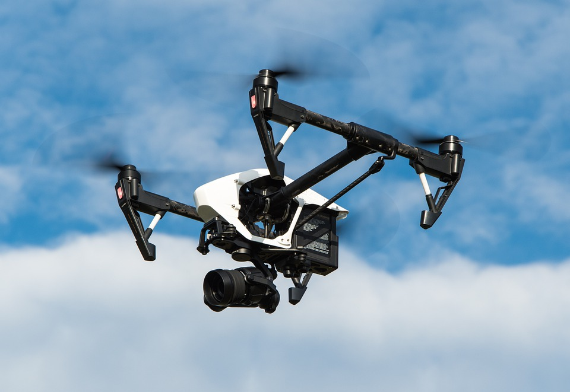

A infância tecnológica
A tecnologia é uma ferramenta que traz inúmeras vantagens ao desenvolvimento das crianças e adolescentes, desde que usada da forma correta e com o direcionamento certo. Otimizar o uso da tecnologia pelas crianças ajuda a desenvolver raciocínio lógico, e pode ser um excelente aliado dos estudos escolares.
Ler mais

Quais os Principais tipos de Drones
É muito importante saber a distinção entre os diversos tipos de drone disponíveis no mercado. Os drones são divididos em algumas categorias, que são basilares conhecer para uma sábia decisão. São três as categorias que podemos destacar, os drones multi-motores, rotor únicos e com asa fixa. Dentro dessas categorias você pode encontrar outros tipos de drones.
Ler mais

A Inteligência Artificial dos Robôs
O que diferencia a inteligência artificial dos robôs é a palavra “inteligência”. Robôs são capazes de simplesmente executar sequências de instruções definidas. Enquanto AI pode “imitar” um certo nível de inteligência humana.
Ler mais